V sekci Snadné testování jsme se naučili psát jednotkové testy. Jednotkový test spouští testovaný kód opatřený vstupem a výstupem a ověřuje, zda je výstup správný. Je důležité poznamenat, že jednotkový test spouští kód pouze jednou. To znamená, že jeden test pokrývá pouze jeden vstupní scénář. Například funkce orGate, kterou jsme použili dříve, má čtyři možné vstupní sestavy, takže potřebujeme provést čtyři jednotkové testy abychom plně ověřili, že se chová podle očekávání.
orGate a b =
Bitwise.or a b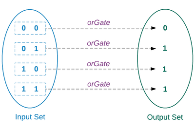
Provést takové čtyři testy je docela snadné ale je-li množina vstupních sestav mnohem větší, stává se ověření všech vstupních scénářů únavné. Funkce rippleCarryAdder například, přijímá devět vstupních signálů, což vede k 2 ^ 9 = 512 různým scénářům.
rippleCarryAdder a b carryIn =
let
-- Extract digits
( a3, a2, a1, a0 ) =
extractDigits a
( b3, b2, b1, b0 ) =
extractDigits b
-- Compute sum
firstResult =
fullAdder a0 b0 carryIn
secondResult =
fullAdder a1 b1 firstResult.carry
thirdResult =
fullAdder a2 b2 secondResult.carry
finalResult =
fullAdder a3 b3 thirdResult.carry
in
[ finalResult, thirdResult, secondResult, firstResult ]
|> List.map .sum
|> (::) finalResult.carry
|> numberFromDigits
Abychom ověřili, že se funkce rippleCarryAdder chová dle očekávání, potřebujeme napsat 512 jednotkových testů. To je hafo testů. Zajisté, obvykle nepotřebujeme stoprocentní pokrytí testy. Potřebujeme jen tolik testů abychom dosáhli jisté úrovně důvěry. Kdybychom dospěli k závěru, že nám stačí padesátiprocentní pokrytí, je to stále mnoho testů.
Lepší alternativou je psaní neostrých (fuzzy) testů. Fuzz test opakovaně spouští testovaný kód s náhodně generovanými vstupy. Předtím, než si ukážeme jak fuzz testy usnadňují testování funkcí jako je rippleCarryAdder, napišme si několik jednoduchých fuzz testů abychom pochopili, jak pracují.
“The term ‘fuzzing’ originates from a 1988 class project, taught by Barton Miller at the University of Wisconsin. To fuzz test a Unix utility meant to automatically generate random files and command-line parameters for the utility. The project was designed to test the reliability of Unix programs by executing a large number of random inputs in quick succession until they crashed.” - Wikipedia
Jednoduchý fuzz test
Vytvořte nový soubor, nazvaný FuzzTests.elm v adresáři beginning-elm/tests.
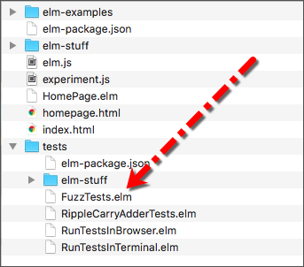
Do souboru FuzzTests.elm vložte následující kód.
module FuzzTests exposing (allTests)
import Test exposing (Test, describe, test, fuzz)
import Expect
import Fuzz exposing (..)
allTests : Test
allTests =
describe "Example Fuzz Tests"
[ addOneTests ]
addOneTests : Test
addOneTests =
describe "addOne"
[ fuzz int "adds 1 to any integer" <|
\num ->
addOne num |> Expect.equal (num + 1)
]
addOne : Int -> Int
addOne x =
1 + xVytvořili jsme nový modul, nazvaný FuzzTests, importovali do něho několik dalších modulů, které nám umožní psát fuzz testy; vytvořili jsme funkci, která přičítá 1 k danému číslu a napsali jsme fuzz test, který ověřuje, zda funkce addOne správně přičítá 1 k danému celému číslu.
Elm nedělá žádné rozdíly mezi testovacím a normálním modulem. V reálných projektech se doporučuje vkládat produkční kód a testovací kód do samostatných modulů. Abychom si věci usnadnili, budeme v této sekci doporučení ignorovat a vložíme kódy do jednoho modulu.
Následující schéma vysvětluje různé komponenty fuzz testu.
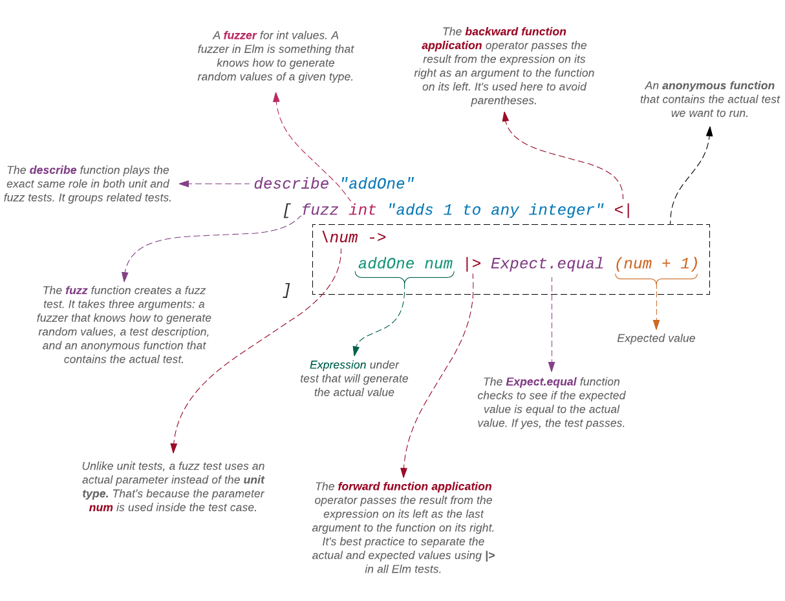
Struktura fuzz testu je velmi podobná jednotkovému testu - až na tyto tři rozdíly:
#1: Fuzz test se tvoří s použitím funkce zavané fuzz místo test. Obě tyto funkce jsou definované v modulu Test.
#2: Funkce fuzz přijímá tři argumenty, zatímco funkce test, která vytváří jednotkový test, přijímá dva.
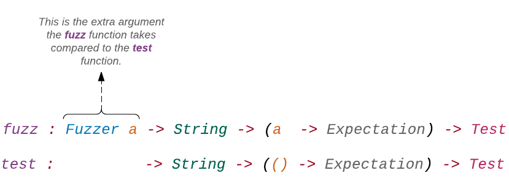
První argument funkce fuzz je fuzzer, který ví, jak generovat hodnotu daného typu. Ve výše uvedeném příkladě jsme použili fuzzer int, který generuje 32-bitovou celočíselnou hodnotu. Implicitně generuje 100 hodnot mezi -50 a 50. Protože hodnota 0 je ve většině kódů známá tím, že přivolává mezní případy, fuzzer int vždy tuto hodnotu mezi generovanými hodnotami uvádí. Modul Fuzz poskytuje fuzzer pro každý obecně používaný vestavěný typ, jako je float, string, list, maybe, etc. Můžeme také vytvořit fuzzer pro vlastní uživatelské typy.
Všechny fuzzery jsou definovány v modulu Fuzz ale samotná funkce fuzz je definovaná v modulu Test. Proto při psaní fuzz testů potřebujeme importovat oba moduly.
#3: Anonymní funkce, která obsahuje vlastní test, používá reálný parametr místo jednotkového typu (). To proto, že parametr num je vlastně použit uvnitř testovacího případu. V případě jednotkového testu jsme nemuseli zadávat hodnotu anonymní funkci, která jednoduše použila jednotkový typ.
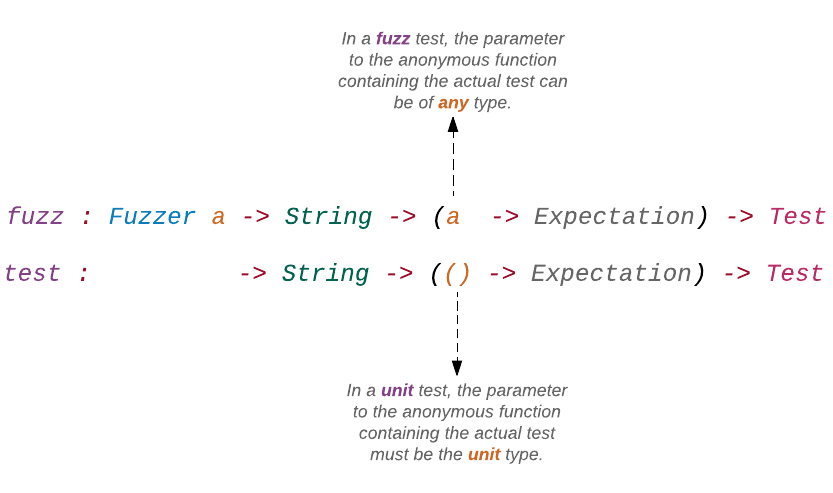
Spouštění fuzz testu v terminálu
Abychom mohli výše uvedený test spustit v terminálu, potřebujeme upravit soubor RunTestsInTerminal.elm, umístěný v adresáři beginning-elm/tests. Nahraďte jeho obsah tímto:
port module RunTestsInTerminal exposing (main)
import Test.Runner.Node exposing (TestProgram, run)
import Json.Encode exposing (Value)
import RippleCarryAdderTests
import FuzzTests
import Test exposing (describe)
main : TestProgram
main =
run emit <|
describe "Test suite"
[ RippleCarryAdderTests.allTests
, FuzzTests.allTests
]
port emit : ( String, Value ) -> Cmd msgTakto vypadal předtím:
port module RunTestsInTerminal exposing (main)
import Test.Runner.Node exposing (run)
import Json.Encode exposing (Value)
import RippleCarryAdderTests exposing (allTests)
main =
run emit allTests
port emit : ( String, Value ) -> Cmd msgToto se změnilo:
Změna #1: Exponovali jsme alias typu TestProgram z modulu Test.Runner.Node. Funkce main (jež je technicky konstantou, protože nepřijímá žádný parametr) produkuje hodnotu typu TestProgram, jenž je definován takto:
type alias TestProgram =
Program Value (Model Msg Model) (Msg Msg)Není důležité znát, co ve skutečnosti typ TestProgram znamená. Vše, co potřebujeme znát je to, že funkce main vrací program, který obsahuje pěknou řádku testů. Výstupy z provádění těchto testů jsou přes port emitovány do terminálu.
Změna #2: Importovali jsme modul FuzzTests, který obsahuje fuzz testy, které jsme napsali výše.
import FuzzTestsZměna #3: Importovali jsme modul Test a exponovali funkci describe, jež nám umožňuje shromáždit víceré testy.
import Test exposing (describe)Změna #4: Nakonec jsme zabalili dvě testovací mini sady do bloku describe. Také jsme přestali exponovat funkci allTests z modulu RippleCarryAdderTests. To nás přimělo prefixovat oba výskyty allTests názvem modulu, což usnadňuje určit, odkud pochází.
describe "Test suite"
[ RippleCarryAdderTests.allTests
, FuzzTests.allTests
]Spusťte následující příkaz z adresáře beginning-elm v terminálu.
elm-test tests/RunTestsInTerminal.elmMěl byste vidět následující výstup, který oznamuje, že námi napsaný fuzz test prošel.
Success! Compiled 2 modules.
Successfully generated /var/folders/w9/lhzr92wx6hnd44s39dqf5hsh0000gn/T/elm_test_117123-76497-1ewimkv.5vje0fi529.js
elm-test
--------
Running 29 tests. To reproduce these results, run: elm-test --seed 862984177
TEST RUN PASSED
Duration: 32 ms
Passed: 29
Failed: 0Výstup říká, že prošlo 29 testů; 28 z nich pochází ze souboru RippleCarryAdderTests.elm, který jsme vytvořili v sekci Snadné testování. I když elm-test počítá každý fuzz test jako jediný test, je za scénou spouštěn vícekrát.
Spuštění fuzz testu v prohlížeči
Abychom mohli výše uvedený test spustit v prohlížeči, potřebujeme upravit soubor RunTestsInBrowser.elm, umístěný v adresáři beginning-elm/tests. Nahraďte jeho text tímto:
module RunTestsInBrowser exposing (main)
import Test.Runner.Html exposing (TestProgram, run)
import RippleCarryAdderTests
import FuzzTests
import Test exposing (describe)
main : TestProgram
main =
run <|
describe "Test suite"
[ RippleCarryAdderTests.allTests
, FuzzTests.allTests
]Jediný rozdíl mezi tímto souborem a souborem RunTestsInTerminal.elm je ten, že ten druhý definuje port zvaný emit a importuje modul Json.Encode, který obsahuje typ Value, použitý v definici portu.
Pro spuštění testů přejděte do adresáře beginning-elm/tests a tam aktivujte elm-reactor, pokud již není spuštěný. Nyní navštivte stánku na http://localhost:8000/RunTestsInBrowser.elm. Měl byste vidět 29 prověřených testů.
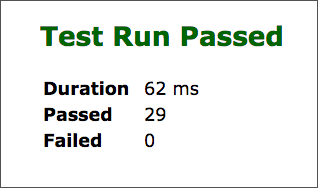
Neúspěšný fuzz test
Podívejme se, jak vypadá neúspěšný fuzz test. Upravte funkci addOne v souboru FuzzTests.elm takto:
addOne : Int -> Int
addOne x =
1 - xMísto přičtení x k 1, nyní tuto hodnotu odečítáme. Obnovíte-li stránku na http://localhost:8000/RunTestsInBrowser.elm, měl byste vidě informaci o selhání.
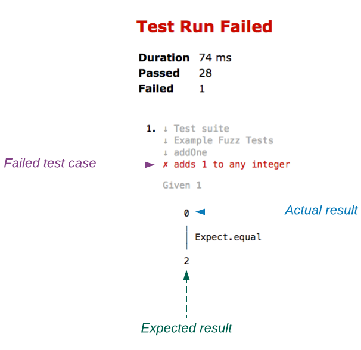
Výstup vypadá téměř stejně jako neúspěšný jednotkový test. S jedním malý rozdílem. Fuzz testy selhávají inteligentněji ve srovnání s jednotkovými testy. Prozkoumejme tyto rozdíly přidáním jednotkového testu do funkce addOneTests v souboru FuzzTests.elm.
addOneTests : Test
addOneTests =
describe "addOne"
[ fuzz int "adds 1 to any integer" <|
\num ->
addOne num |> Expect.equal (num + 1)
, test "when 1 is added to 2, the result is 3" <|
\() ->
addOne 2 |> Expect.equal 4
]Je perfektně možné spojit jednotkové a fuzz testy, jak jsme provedli zde. Obnovítel-li stránku na
It’s perfectly fine to combine unit and fuzz tests as we’ve done here. If you refresh the page at http://localhost:8000/RunTestsInBrowser.elm, uvidíte dva neúspěšné testy.
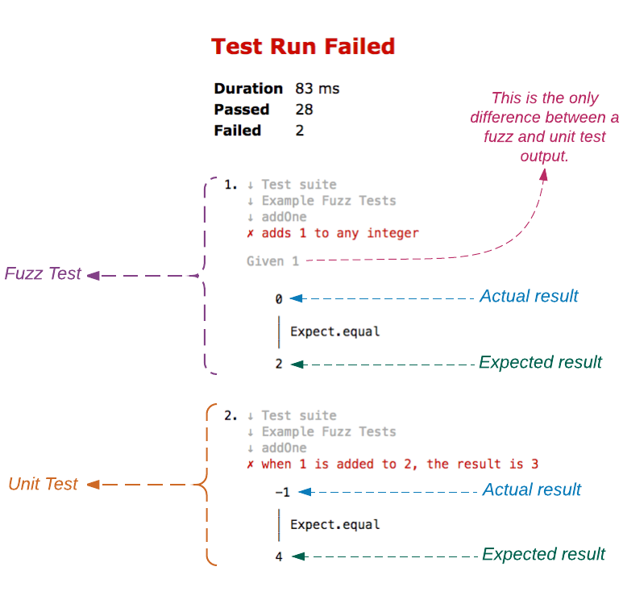
Všimněte si, že výstup fuzz testu uvádí "Given 1". U jednotkového testu víme přesně při jaké hodnotě selhal z pouhého pohledu na test. Zadali jsme 2 funkci addOne. Takže určitě víme, že funkce nepracuje, je-li vstup 2. Ovšem, u fuzz testu nemůžeme říci, při jaké hodnotě test selhal z pouhého pohledu na jeho výstup. Test se provádí pro různé hodnoty. V našem případě, protože používáme fuzzer int, je generována hodnota mezi-50 a 50.
Stávající (nesprávná) logika ve funkci addOne je pozitivní pro hodnotu 0 avšak negativní pro všechny nenulové hodnoty. Proč tedy výstup z testu oznamuje, že logika funkce selhala pro 1, místo pro všechny ostatní náhodně vybraná čísla? Když fuzz test nevyhoví, místo aby se ukázala první nevyhovující hodnota, pro kterou test selhal, pokouší se program omezit nevyhovující vstup na nejmenší a nejjednodušší hodnotu aby bylo snadnější pochopit, proč test selhal.
Testování vlastností
Fuzz test, který jsme výše napsali, je ekvivalentní se stovkou jednotkových testů, protože provádí tentýž test pro sto různých vstupních hodnot. Mohli bychom jej provádět i pro více vstupů, kdybychom chtěli. Zatímco jednotkový test je zaměřen na ověření, že jeden specifický vstupní scénář pracuje správně, zaměřuje se fuzz test na ujištění, že nějaká důležitá vlastnost platí pro všechny vstupy a výstupy. Například u funce addOne jde o potvrzení, že rozdíl mezi vystupem a vstupem je vždy přesně 1.
Protože nám fuzz testy poskytují nejvíce "muziky", měli bychom jim dávat přednost před jednotkovými testy. Narazíme-li na mezní případy, je vhodné doplnit naší testovací sestavu jednotkovými testy. Neposkytuje-li jednotkový test podrobnější informaci, můžeme jej klidně smazat. Když o tom hovoříme, smažme nepotřebný jednotkový test z funkce addOneTests v souboru FuzzTests.elm.
addOneTests : Test
addOneTests =
describe "addOne"
[ fuzz int "adds 1 to any integer" <|
\num ->
addOne num |> Expect.equal (num + 1)
]Upravme také logiku u funkce addOne nahrazením -operátorem +.
addOne : Int -> Int
addOne x =
1 + xVíce fuzzerů
Funkce s více argumenty jsou v Elmu docela běžné. Takže nám nestačí vědět jak generovat pouze jeden náhodný vstup. Naštěstí nám elm-test umožňuje snadno generovat vícero hodnot. Přidejme novou funkci s názvem add na spodek souboru FuzzTests.elm.
add : Int -> Int -> Int
add x y =
x + yK otestování této funkce potřebujeme generovat dvě náhodné hodnoty. Můžeme to udělat s použitím funkce fuzz2. Přidejte testovací funkci addTests na spodek souboru FuzzTests.elm.
addTests : Test
addTests =
describe "add"
[ fuzz2 int int "adds two given integers" <|
\num1 num2 ->
add num1 num2
|> Expect.equal (num1 + num2)
]Exponujme funkci fuzz2 a přidejme addTests do naší testovací soupravy v souboru FuzzTests.elm.
module FuzzTests exposing (allTests)
import Test exposing (Test, describe, test, fuzz, fuzz2)
.
.
allTests : Test
allTests =
describe "Example Fuzz Tests"
[ addOneTests
, addTests
]
.
.Po obnovení stránky na http://localhost:8000/RunTestsInBrowser.elm, máte vidět, že všechny testy prošly, včetně toho, který jste právě napsal (Passed 29).
Funkce fuzz2 pracuje stejně jako funkce fuzz, pouze s tím rozdílem, že přijímá dva fuzzery. Takto vypadá typická signatura:
fuzz2
: Fuzzer a
-> Fuzzer b
-> String
-> (a -> b -> Expectation)
-> Test
Potřebujeme-li tři náhodné vstupy, můžeme použít funkci fuzz3. Takto vypadá signatura jejího typu:
fuzz3
: Fuzzer a
-> Fuzzer b
-> Fuzzer c
-> String
-> (a -> b -> c -> Expectation)
-> TestProgramelm-test poskytuje ještě dvě funkce zvané fuzz4 a
fuzz5
pro generování čtyř, případně pěti náhodných vstupů.
Počet cyklů ve Fuzz Testu
Již jsme si řekli, že každý fuzz test se implicitně provádí stokrát s různými vstupy. Kolikrát test proběhne nám řekne funkce fuzzWith. Takto vypadá její signatura:
fuzzWith
: FuzzOptions
-> Fuzzer a
-> String
-> (a -> Expectation)
-> Test
type alias FuzzOptions =
{ runs : Int
}Přepišme funkci addOneTests v souboru FuzzTests.elm použitím funkce fuzzWith.
addOneTests : Test
addOneTests =
describe "addOne"
[ fuzzWith { runs = 200 } int "adds 1 to the given integer" <|
\num ->
addOne num |> Expect.equal (num + 1)
]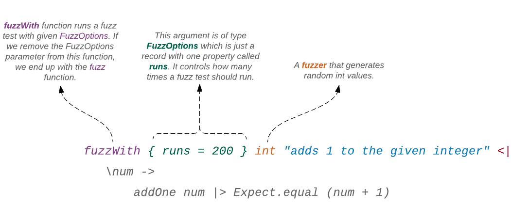
Exponujte funkci fuzzWith v souboru FuzzTests.elm a obnovte stránku na http://localhost:8000/RunTestsInBrowser.elm. Měl byste vidět, že všechny testy prošly.
module FuzzTests exposing (allTests)
import Test exposing (Test, describe, test, fuzz, fuzz2, fuzzWith)
.
.Rozsah hodnot fuzz testu
Fuzzer int generuje hodnoty implicitně mezi -50 a 50. Tento rozsah můžeme měnit fuzzerem intRange. Upravme funkci addOneTests v souboru FuzzTests.elm ještě jednou s explicitně vyjádřeným rozsahem použitých hodnot při provádění testu.
addOneTests : Test
addOneTests =
describe "addOne"
[ fuzz (intRange -100 100) "adds 1 to the given integer" <|
\num ->
addOne num |> Expect.equal (num + 1)
]Všimněte si, že je funkce intRange a její argumenty uzavřena v závorkách. Za scénou jsou všechny fuzzery normální funkce. Není tedy žádný rozdíl mezi (intRange -100 100) a normální aplikací funkce.
Obnovte stránku na http://localhost:8000/RunTestsInBrowser.elm. Měl byste vidět, že všechny testy prošly.
Můžeme také přikázat funkci intRange aby vybírala hodnoty z celého spektra celočíselných hodnot. Upravte funkci addOneTests takto:
addOneTests : Test
addOneTests =
describe "addOne"
[ fuzz (intRange minInt maxInt) "adds 1 to the given integer" <|
\num ->
addOne num |> Expect.equal (num + 1)
]Položka maxInt je konstanta, definovaná v modulu Random. Reprezentuje maximální hodnotu náhodně generovaných 32-bitový čísel: 2147483647. Položka minInt je rovněž definovaná v modulu Random a reprezentuje minimální hodnotu náhodně generovaných 32-bitových čísel: -2147483648.
Před spuštěním výše uvedeného testu potřebujeme importovat modul Random do souboru FuzzTests.elm.
module FuzzTests exposing (allTests)
import Random exposing (minInt, maxInt)
.
.Když nyní obnovíte stránku na http://localhost:8000/RunTestsInBrowser.elm, měl byste vidět, že všechny testy prošly.
Frekvence hodnot
Zde je experiment, který můžete předvést svým přátelům. Požádejte každého z nich aby vybral číslo mezi 1 a 10. Zjistíte, že většina vybrala číslo 7, málo z nich vybralo čísla 1, 5 a 10. Mají tendenci vybírat čísla mezi 5 a 10 mnohem častěji, než čísla mezi 1 and 5.
Vytvořme fuzzer, který simuluje toto poněkud předvídatelné chování vašich přátel. Použijeme následující pravděpodobnosti pro čísla mezi 1 a 10:
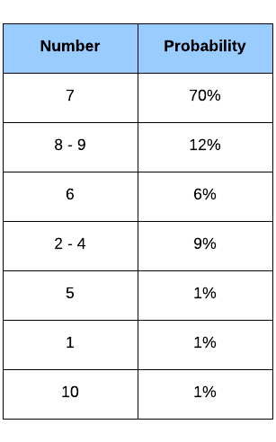
Přidejte následující funkce na spodek souboru FuzzTests.elm.
frequencyFuzzer : Fuzzer Int
frequencyFuzzer =
let
probabilities =
frequency
[ ( 70, constant 7 )
, ( 12, intRange 8 9 )
, ( 6, constant 6 )
, ( 9, intRange 2 4 )
, ( 1, constant 5 )
, ( 1, constant 1 )
, ( 1, constant 10 )
]
in
probabilities
|> Result.withDefault (intRange 1 10)
addOneFrequencyTest : Test
addOneFrequencyTest =
describe "addOne"
[ fuzz frequencyFuzzer "adds 1 to the given integer" <|
\num ->
addOne num |> Expect.equal (num + 1)
]V konstantě frequencyFuzzer je použit fuzzer frequency pro přiřazení pravděpodobností k hodnotám mezi 1 a 10 podle výše uvedené tabulky. Takto vypadá signatura fuzzeru:
frequency : List (Float, Fuzzer a) -> Result String (Fuzzer a)Jako svůj jediný argument přijímá seznam entic. První element entice (tuple) představuje pravděpodobnostní váhu a druhý element reprezentuje konkretní fuzzer, zodpovědný za generování náhodné hodnoty. Význam položky intRange již známe. Fuzzer constant generuje pouze zadanou hodnotu. Typ vratné hodnoty indikuje, že fuzzer frequency vrací Result. Je to proto, že proces může selhat při výskytu kterékoli z následující okolnosti:
- Seznam frekvencí je prázdný
- Některá z vah je menší než
0 - Součet všech vah je
0
Pokud se funkci frequency nepodaří vytvořit fuzzer, vrací se vysvětlující řetězec. Tato chybová zpráva je označena jako Err. Pro vynětí fuzzeru z typu Result jsme použili účelovou funkci zvanou Result.withDefault, která vrací hodnotu, je-li výsledek OK, je-li však výsledkem Err, vrací implicitní hodnotu. V našem případě to je intRange 1 10. Takto je funkce withDefault implementována za scénou:
withDefault : value -> Result error value -> value
withDefault defaultValue result =
case result of
Ok value ->
value
Err _ ->
defaultValueFunkce addOneFrequencyTest jednoduše používá fuzzer, generovaný funkcí frequencyFuzzer k testování funkce addOne. Abychom si ji pustili, přidáme ji k funkci allTests v souboru FuzzTests.elm.
allTests : Test
allTests =
describe "Example Fuzz Tests"
[ addOneTests
, addTests
, addOneFrequencyTest
]Obnovená stránka na http://localhost:8000/RunTestsInBrowser.elm by nám měla sdělit, že všechny testy prošly.
Dosud jsme popsali fuzzery int, constant, a frequency. Proberme si některé další fuzzery, které elm-test poskytuje pro generování hodnot různých vestavěných typů.
Fuzzer bool
Fuzzer bool generuje hodnoty typu Bool: True a False. Přidejte následující definici funkce na spodek souboru FuzzTests.elm.
flip : Bool -> Bool
flip x =
not x
flipTests : Test
flipTests =
describe "flip"
[ fuzz bool "negates the given boolean value" <|
\value ->
flip value |> Expect.equal (not value)
]Přidejte flipTests do seznamu testů v allTests a obnovte stránku na http://localhost:8000/RunTestsInBrowser.elm. Mělo by vše proběhnout v pořádku.
allTests : Test
allTests =
describe "Example Fuzz Tests"
[ addOneTests
, addTests
, addOneFrequencyTest
, flipTests
]Fuzzer float
Fuzzer float je velice podobný fazzeru int. Implicitně generuje náhodné hodnoty typu Float mezi -50 a 50. Protože jsou fuzz testy zejména užitečné pro vysledování obskurních chyb, způsobených neočekávanými hodnotami jako je 0, fuzzer float rovněž zahrnuje tuto hodnotu mezi generované vstupy. Přidejte následující definice funkcí na spodek souboru FuzzTests.elm.
multiplyFloat : Float -> Int -> Float
multiplyFloat x y =
x * (toFloat y)
multiplyFloatTests : Test
multiplyFloatTests =
describe "multiplyFloat"
[ fuzz2 float int "multiplies given numbers" <|
\x y ->
multiplyFloat x y
|> Expect.equal (x * (toFloat y))
]Mohl jste si všimnout, že jsme v našem testu pěkně duplikovali logiku uvnitř funkce multiplyFloat. U jednoduché funkce často končíme tím, že do testu kopírujeme její implementaci. Jak roste složitost naší funkce, musíme být při definování testovaných vlastností více kreativní.
Přidejte multiplyFloatTests do seznamu testů v allTests a obnovte stránku na http://localhost:8000/RunTestsInBrowser.elm. Všechny testy by měly projít.
allTests : Test
allTests =
describe "Example Fuzz Tests"
.
.
, flipTests
, multiplyFloatTests
]Funkce multiplyFloatTests kombinuje dva různé fuzzery: float a int. Vstupní hodoty různých typů jsou u funkcí Elmu normální. Potažmo to platí i pro fuzzery, které jsou za scénou rovněž funkcemi.
Fuzzer float nikdy nevyprodukuje tyto hodnoty, definované v IEEE 754: NaN, -Infinity a Infinity.
NaN
NaN znamená "not a number". Když výpočet ústí do neprezentovatelného desetinného čísla, vrací nám Elm NaN. Zde je několik příkladů:
> 0 / 0
NaN : Float
> sqrt -5
NaN : FloatModul Basics definuje funkci nazvanou isNaN, kterou lze použít k ověření, zda je výsledek opravdu NaN.
> isNaN (0 / 0)
True : Bool
> isNaN (sqrt -5)
True : BoolNekonečno a - nekonečno
Infinity and -Infinity reprezentují čísla větší než jakákoli počítatelná čísla. Nejsou to pouze velká čísla. Jsou to ve skutečnosti nikdy nekončící čísla. Zde je několik příkladů:
> 1 / 0
Infinity : Float
> -1 / 0
-Infinity : FloatModul Basics také poskytuje funkci nazvanou isInfinite, která ověřuje, zda daný výpočet směřuje do nekonečna.
> isInfinite (1 / 0)
True : Bool
> isInfinite (0 / 0)
False : Bool
> googol = 10 ^ 100
1.0000000000000002e+100 : number
> isInfinite googol
False : BoolGoogol je číslo tak veliké, že je větší než celkový počet elementárních částic, přítomných ve známém univerzu. A ani to není považováno za nekonečné číslo. Všimněte si, že výraz 0/0 není považován za Infinity. Je prezentován jako NaN, což není totéž co Infinity.
Rozsah desetinných čísel
Podobně jako u intRange, můžeme rovněž určit rozsah desetinných čísel fuzzerem floatRange. Upravte funkci multiplyFloatTests v souboru FuzzTests.elm, tak aby použila floatRange.
multiplyFloatTests : Test
multiplyFloatTests =
describe "multiplyFloat"
[ fuzz2 (floatRange -1.0 1.0) int "multiplies given numbers" <|
\x y ->
multiplyFloat x y
|> Expect.equal (x * (toFloat y))
]Osvěžíte-li stránku na http://localhost:8000/RunTestsInBrowser.elm, měl byste zjistit, že všechny testy prošly.
Procentní fuzzer
Fuzzer percentage generuje desetinná čísla mezi 0.0 a 1.0.
It generates zero and one about 10% of the time. Přidejte následující definici funkce na spodek souboru FuzzTests.elm.
pizzaLeft : Float -> Float -> Float
pizzaLeft eatenPercent totalSlices =
totalSlices - (eatenPercent * totalSlices)
pizzaLeftTests : Test
pizzaLeftTests =
describe "pizzaLeft"
[ fuzz2 percentage float "returns remaining pizza slices" <|
\eaten total ->
pizzaLeft eaten total
|> Expect.equal (total - (eaten * total))
]Nyní přidejte pizzaLeftTests do seznamu testů v allTests a obnovte stránku na http://localhost:8000/RunTestsInBrowser.elm. Měl byste vidět, že všechny testy prošly.
allTests : Test
allTests =
describe "Example Fuzz Tests"
.
.
, multiplyFloatTests
, pizzaLeftTests
]Fuzzer string
Fuzzer string generuje náhodné tisknutelné ASCII
řetězce, skládající se z až 1000 znaků. Mezi generovanými hodnotami nechybí často opomíjený prázdný řetězec.
Tato stránka oficiální dokumentace pro paket elm-test má pěkný příklad, který používá fuzzer string. My si jej nyní vypůjčíme. Přidejte následující testy na spodek souboru FuzzTests.elm.
stringTests : Test
stringTests =
describe "The String module"
[ describe "String.reverse"
[ test "has no effect on a palindrome" <|
-- Unit Test - 1
\() ->
let
palindrome =
"hannah"
in
palindrome
|> String.reverse
|> Expect.equal palindrome
, test "reverses a known string" <|
-- Unit Test - 2
\() ->
"ABCDEFG"
|> String.reverse
|> Expect.equal "GFEDCBA"
, fuzz string "restores the original string if you run it again" <|
-- Fuzz Test
\randomlyGeneratedString ->
randomlyGeneratedString
|> String.reverse
|> String.reverse
|> Expect.equal randomlyGeneratedString
]
]Všimněte si, jak stringTests doplňuje fuzz test dvěma jednotkovými testy. První jednotkový test ověřuje, že mezní případ pro převrácený palindrom pracuje dle očekávání. Druhý jednotkový test objasňuje činnost funkce String.reverse. Tyto testy jsou dobrou ukázkou, jak by se náš kód měl chovat a bránit regresím.
- Regrese
- "Opětovný výskyt stejné chyby v již opraveném kódu" - Wikitionary
Přidejte stringTests do funkce allTests a obnovte stránku na http://localhost:8000/RunTestsInBrowser.elm. Všechny testy by měly projít.
allTests : Test
allTests =
describe "Example Fuzz Tests"
.
.
, pizzaLeftTests
, stringTests
]Fuzzer list
Fuzzer list generuje seznam náhodných hodnot daného typu. Řekněme, že si chceme ověřit, že funkce List.length nikdy nevrací zápornou hodnotu. Přidejte následující test na spodek souboru FuzzTests.elm.
listLengthTests : Test
listLengthTests =
describe "List.length"
[ fuzz (list int) "never returns a negative value" <|
\intList ->
intList
|> List.length
|> Expect.atLeast 0
]Zde poprvé vidíme fuzzer, který přijímá jiný fuzzer jako argument. Pohleďme na signaturu typu fuzzeru list, abychom porozuměli jeho působení.
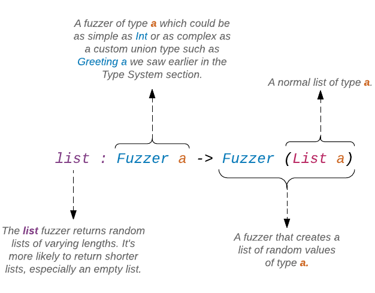
Stejně jako u fuzzerů intRange a floatRange musí být fuzzer list a jeho argumenty obklopeny závorkami. Jinak si Elm myslí, že zadáváme dva různé fuzzery funkci fuzz, která přijímá pouze jeden. I když jsou list and int dva různé typy fuzzerů, vrací výraz (list int) pouze jeden.
Abychom mohli výše uvedený test spustit, potřebujeme jej přidat do funkce allTests v souboru FuzzTetss.elm. Poté obnovte stránku na http://localhost:8000/RunTestsInBrowser.elm a měl byste vidět, že testy prošly.
allTests : Test
allTests =
describe "Example Fuzz Tests"
.
.
, stringTests
, listLengthTests
]Fuzzer array
Stejně jako fuzzer list, generuje fuzzer array array náhodných hodnot zadaného typu. Jeho typová signature je také velmi podobná signatuře fuzzeru list.
array : Fuzzer a -> Fuzzer (Array a)Napišme test, který ověří, že funkce Array.get vždy vrací Nothing, pokusíme-li se o přístup k indexu mimo rozsah. Přidejte následující test na spodek souboru FuzzTests.elm.
arrayGetTests : Test
arrayGetTests =
describe "Array.get"
[ fuzz (array (intRange -20 20)) "returns Nothing for out of range index" <|
\intArray ->
let
length =
Array.length intArray
in
intArray
|> Array.get length
|> Expect.equal Nothing
]Požádali jsme fuzzer array, aby generoval náhodné arraye celých čísel mezi -20 a 20. Potom jsme určili délku generovaného arraye a použili ji jako index. Použijeme-li délku jako index, jsme určitě mimo rozsah, protože indexy arraye začínají v Elmu číslem 0. Otevřte elm-repl a zadejte následující kód.
> import Array
> myArray = Array.fromList [ 1, 2, 3 ]
Array.fromList [1,2,3] : Array.Array number
> Array.get 2 myArray
Just 3 : Maybe.Maybe number
> length = Array.length myArray
3 : Int
> Array.get length myArray
Nothing : Maybe.Maybe numberPřed spuštěním testu 'arrayGetTests' musíme importovat modul Array do souboru FuzzTests.elm.
module FuzzTests exposing (allTests)
import Array
.
.Nyní přidejte arrayGetTests do funkce allTests v souboru FuzzTests.elm a obnovte stránku na http://localhost:8000/RunTestsInBrowser.elm abychom viděli výsledek.
allTests : Test
allTests =
describe "Example Fuzz Tests"
.
.
, listLengthTests
, arrayGetTests
]Fuzzer tuple
Fuzzer tuple generuje entici náhodných hodnot daného typu. Pro lepší pochopení jeho funkce prozkoumejme jeho signaturu.
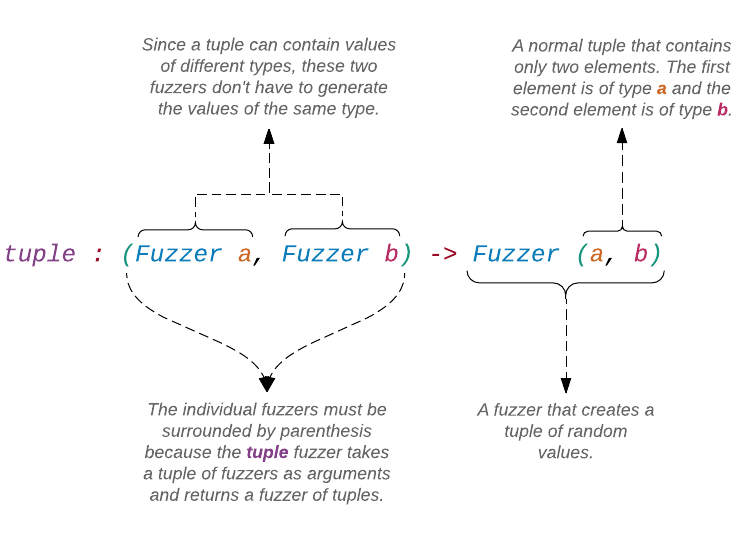
Fuzzer tuple přijímá jako první argumententici dvou různých fuzzerů. Kdyby měl přijmout dva fuzzery jako oddělené argumenty, byla by jeho signatura takováto:
tuple : Fuzzer a -> Fuzzer b -> Fuzzer (a, b)Upravte funkci addTests v souboru FuzzTests.elm aby použila fuzzer tuple.
addTests : Test
addTests =
describe "add"
[ fuzz (tuple ( int, int )) "adds two given integers" <|
\( num1, num2 ) ->
add num1 num2
|> Expect.equal (num1 + num2)
]Takto vypadala funkce addTests předtím:
addTests : Test
addTests =
describe "add"
[ fuzz2 int int "adds two given integers" <|
\num1 num2 ->
add num1 num2
|> Expect.equal (num1 + num2)
]Předchozí funkce byla poněkud úpravnější, že? To proto, že fuzz2 je účelová (convenience) funkce, která nám umožňuje psát testy s fuzzery tuple elegantnějším způsobem. Napišme další příklad, odhalující inherentní ošklivost fuzzeru tupple. Přidejte následující test na spodek souboru FuzzTests.elm.
listReverseTests : Test
listReverseTests =
describe "List.reverse"
[ fuzz (tuple ( (list int), int )) "doesn't remove a member of the list" <|
\( intList, num ) ->
intList
|> List.reverse
|> List.member num
|> Expect.equal (List.member num intList)
]Tento test potvrzuje, že funkce List.reverse neodebírá element seznamu. Podívejte se, jak nepřehledná je část za fuzz se všemi závorkami. Mnohem čistší je verze s fuzz2.
listReverseTests : Test
listReverseTests =
describe "List.reverse"
[ fuzz2 (list int) int "doesn't remove a member of the list" <|
\intList num ->
intList
|> List.reverse
|> List.member num
|> Expect.equal (List.member num intList)
]Přidejme listReverseTests (verzi s fuzzerem tuple) do funkce allTests, abychom ji mohli spustit.
allTests : Test
allTests =
describe "Example Fuzz Tests"
.
.
, arrayGetTests
, listReverseTests
]Obnovíte-li stránku na http://localhost:8000/RunTestsInBrowser.elm, měl byste vidět, že všechny testy prošly.
Jak se ukazuje, funkce fuzz3, fuzz4 a fuzz5, s nimiž jsme se setkali dříve, jsou také zkratky pro fuzzery tupple3, tupple4 a tupple5.
tuple3
: (Fuzzer a, Fuzzer b, Fuzzer c)
-> Fuzzer (a, b, c)
tuple4
: (Fuzzer a, Fuzzer b, Fuzzer c, Fuzzer d)
-> Fuzzer (a, b, c, d)
tuple5
: (Fuzzer a, Fuzzer b, Fuzzer c, Fuzzer d, Fuzzer e)
-> Fuzzer (a, b, c, d, e)Cvičení 4.8.1
V sekci Rekurzivní typy jsme napsali funkci, která počítá součet všech nodů, obsažených v seznamu typu MyList.
sum : MyList Int -> Int
sum myList =
case myList of
Empty ->
0
Node intValue remainingNodes ->
intValue + sum remainingNodesZkuste několika fuzz testy ověřit, že tato funkce pracuje dle očekávání.
Test funkce rippleCarryAdder
Nyní když víme, jak fuzz testy pracují, obraťme naši pozornost k testování funkce rippleCarryAdder. V sekci ¨Snadné testování jsme napsali čtyři jednotkové testy, které pokrývaly mezní případy a jeden, který ukazoval fungování funkce.
rippleCarryAdderTests : Test
rippleCarryAdderTests =
describe "4-bit ripple carry adder"
[ describe "given two binary numbers and a carry-in digit"
[ test "returns the sum of those numbers and a carry-out digit" <|
\() ->
rippleCarryAdder 1001 1101 1
|> Expect.equal 10111
]
, describe "when the 1st input is 1111, and the 2nd input is 1111"
[ test "and carry-in is 0, the output is 11110" <|
\() ->
rippleCarryAdder 1111 1111 0
|> Expect.equal 11110
, test "and carry-in is 1, the output is 11111" <|
\() ->
rippleCarryAdder 1111 1111 1
|> Expect.equal 11111
]
, describe "when the 1st input is 0000, and the 2nd input is 0000"
[ test "and carry-in is 0, the output is 0000" <|
\() ->
rippleCarryAdder 0 0 0
|> Expect.equal 0
, test "and carry-in is 1, the output is 0001" <|
\() ->
rippleCarryAdder 0 0 1
|> Expect.equal 1
]
]Jak zmíněno na začátku této sekce, funkce rippleCarryAdder má devět vstupních signálů, které vedou k 2 ^ 9 = 512 různých vstupních situací. V sekci Snadné testování jsme si rychle uvědomili, že pro nás nebylo proveditelné použít jednotkové testy k prověření oněch všech situací. A co fuzz testy?
rippleCarryAdderFuzzTests : Test
rippleCarryAdderFuzzTests =
describe "Fuzz tests"
[ fuzz3
(intRange 0 1111)
(intRange 0 1111)
(intRange 0 1)
"fuzz tests for ripple carry adder" <|
\a b carryIn ->
rippleCarryAdder a b carryIn
|> Expect.equal ...
]Kód nahoře ukazuje hrubý obrys fuzz testu, který se pokouší pokrýt všech 512 situací, ale rychle naráží na velký problém: jak ověřit, že funkce rippleCarryAdder pracuje dle očekávání bez rozsáhlé duplicity její logiky. Zatím jsme fuzz testy použili k ověření malých triviálních funkcí duplikováním logiky přímo v testu. Provést totéž s funkcí rippleCarryAdder nedává mnoho smyslu.
Potřebujeme udělat krok zpátky a ptát se, co je zde naším cílem. Jistě jím není testování každé jednotlivé vstupní situace. Měli bychom zapřemýšlet o obecných vlastnostech naší funkce a použít fuzz testy k ověření, že tyto vlastnosti platí pro široký rozsah vstupů.
"Být pyšný na stoprocentní pokrytí testem je jako být pyšný na přečtení každého slova v novinách. Některé jsou důležitější než jiné" - Kent Beck
Níže je uvedeno několik vlastností funkce rippleCarryAdder, které můžeme testovat:
Vlastnost #1: Jsou-li nejvýznamnější číslice obou vstupů 0, bude carry-out číslice vždy 0.
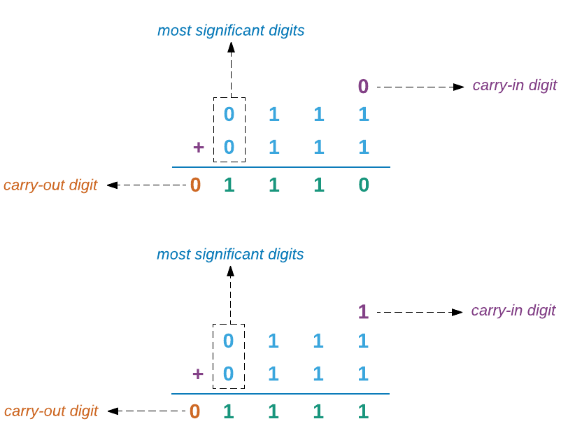
Vlastnost #2: Jsou-li nejvýznamnější číslice obou vstupů 1, bude carry-out číslice vždy 1.
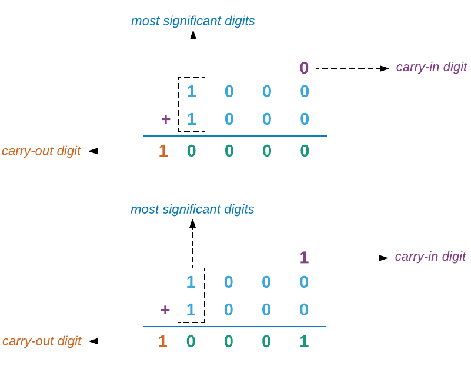
Vlastnost #3: Jsou-li nejméně významné číslice obou vstupů 0 a carry-in číslice je také 0, nejméně významná číslice výstupu bude vždy 0.
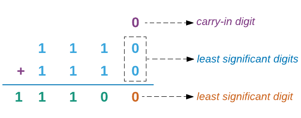
Vlastnost #4: Jsou-li nejméně významné číslice obou vstupů 1 a carry-in číslice je 0, nejméně významnou číslicí bude vždy 0.
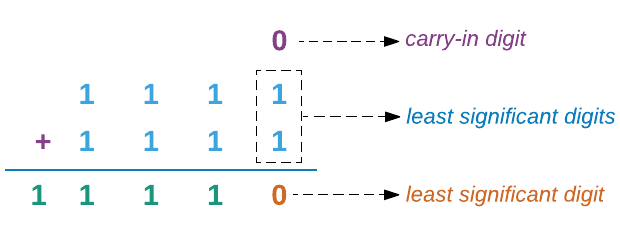
Testování vlastnosti #1
Začněme naše testování s vlastností #1. Přidejte následující test na spodek souboru RippleCarryAdderTests.elm v adresáři beginning-elm/tests.
rippleCarryAdderProperty1 : Test
rippleCarryAdderProperty1 =
describe "carry-out's relationship with most significant digits"
[ fuzz3
(list (intRange 0 1))
(list (intRange 0 1))
(intRange 0 1)
"carry-out is 0 when most significant digits are both 0" <|
\list1 list2 carryIn ->
let
convertToBinary digitsList =
digitsList
|> List.take 3
|> numberFromDigits
firstInput =
convertToBinary list1
secondInput =
convertToBinary list2
in
rippleCarryAdder firstInput secondInput carryIn
|> digits
|> List.length
|> Expect.lessThan 5
]Generování vstupních hodnot
Elm v současné době neposkytuje fuzzer pro generování binárních čísel. Mohli bychom si napsat vlastní fuzzer ale to je pokročilé téma, vyžadující mnoho vysvětlování. Spokojíme se místo toho s tím, že budeme generovat seznamy binárních číslic, které potom přeměníme na binární čísla. Zde je několik příkladů seznamů, generovaných fuzzerem (list (intRange 0 1)):
[ ]
[ 0 ]
[ 1 ]
[ 0, 1]
[ 1, 0, 1]
[ 1, 1, 0, 1, 1]
[ 1, 0, 1, 1, 1, 0, 1]
.
.Potom použijeme funkci convertToBinary, jíž tyto seznamy konvertujeme na binární čísla.
convertToBinary digitsList =
digitsList
|> List.take 3
|> numberFromDigitsFunkce rippleCarryAdder přijímá binární čísla, která mají nejvíce čtyři číslice.
> rippleCarryAdder 1001 1100 0
10101Bohužel, není snadné limitovat délku seznamů, generovaných funkcí (list (intRange 0 1)) na čtyři. Můžeme ale použít funkci List.take pro extrahování prvních čtyř elementů ze seznamu. Ve funkci convertToBinary extrahujeme ve skutečnosti pouze tři, protože vlastnost #1 vyžaduje aby nejvýznamnější číslice obou vstupních čísel byla 0, příčemž funkce rippleCarryAdder považuje seznam s pouze třemi elementy za binární číslo se čtyřmi číslicemi, jejichž nejvýznamnější číslice je 0. Takže [ 1, 0, 1 ] je ekvivalentní k 0101.
Dále použijeme funkci numberFromDigits ke konverzi seznamu číslic na skutečné binární číslo.
numberFromDigits digitsList =
List.foldl (\digit number -> digit + 10 * number) 0 digitsListTuto funkci jsme psali v odstavci Zlepšení výstupu sekce Ripple-Carry Adder. Pokud si ji nepamatujete, vraťte se a přečtěte si odstavec znova.
Co se týče generování carry-in číslice, vše co potřebujeme je fuzzer intRange s rozsahem od 0 do 1, protože carry-in číslice může být buď 0 nebo 1.
Privátní funkce
Je obecně považováno za špatný postup, volat z našich testů privátní funkce jako je numberFromDigits, byť to je technicky veřejná funkce, protože jsme exponovali vše z modulu RippleCarryAdder.
module RippleCarryAdder exposing (..)
.
.To bylo z naší strany přehlédnutí. Měli jsme pouze exponovat ty funkce, které jsou míněny jako veřejné ale jak máme vědět, které funkce by měly být veřejné a které privátní?
Modul RippleCarryAdder obsahuje tucet funkcí, ale když se na ně podíváme pozorně, uvědomíme si, že pouze jedna funkce je zodpovědná za výpočet součtu dvou 4-bit binárních čísel a touto funkcí je rippleCarryAdder. Všechny ostatní funkce jsou pomocníky funkce rippleCarryAdder. Proto pouze tato funkce potřebuje být veřejná.
Nabízí se otázka, proč potřebujeme rozdělit funkcionalitu do více funkcí, jak jsme to udělali v případě modulu RippleCarryAdder? Nešlo by konzolidovat všechny pomocné funkce do jedné rippleCarryAdder, což je jediná funce, o kterou se vnější svět zajímá? Odpovědí je to, že jedna obrovitá funkce, která dělá všechno, se v delším časovém horizontu těžko udržuje. Je obtížné určit, co se od tak velké funkce očekává. Jenom pohleďte na následující kód, vypisující takový pokus o konzolidaci všech pomocných funkcí do jedné rippleCarryAdder.
rippleCarryAdder a b carryIn =
let
halfAdder a b =
let
d =
Bitwise.and a b
e =
Bitwise.or a b
|> case a of
0 ->
1
1 ->
0
_ ->
-1
sumDigit =
Bitwise.and a b
carryOut =
Bitwise.and a b
in
{ carry = carryOut
, sum = sumDigit
}
fullAdder a b carryIn =
let
firstResult =
halfAdder b carryIn
secondResult =
halfAdder a firstResult.sum
finalCarry =
Bitwise.or firstResult.carry secondResult.carry
in
{ carry = finalCarry
, sum = secondResult.sum
}
digits number =
if number == 0 then
[]
else
digits (number // 10) ++ [ number % 10 ]
padZeros total list =
let
numberOfZeros =
total - (List.length list)
in
(List.repeat numberOfZeros 0) ++ list
arrayToTuple array =
let
firstElement =
Array.get 0 array
|> Maybe.withDefault -1
secondElement =
Array.get 1 array
|> Maybe.withDefault -1
thirdElement =
Array.get 2 array
|> Maybe.withDefault -1
fourthElement =
Array.get 3 array
|> Maybe.withDefault -1
in
( firstElement, secondElement, thirdElement, fourthElement )
-- Extract digits
( a3, a2, a1, a0 ) =
digits number
|> padZeros 4
|> Array.fromList
|> arrayToTuple
( b3, b2, b1, b0 ) =
digits number
|> padZeros 4
|> Array.fromList
|> arrayToTuple
-- Compute sum
firstResult =
fullAdder a0 b0 carryIn
secondResult =
fullAdder a1 b1 firstResult.carry
thirdResult =
fullAdder a2 b2 secondResult.carry
finalResult =
fullAdder a3 b3 thirdResult.carry
in
[ finalResult, thirdResult, secondResult, firstResult ]
|> List.map .sum
|> (::) finalResult.carry
|> List.foldl (\digit number -> digit + 10 * number) 0Kdo tento kód čte poprvé, má jistě problém pochopit, jak takováto rippleCarryAdder pracuje. Děje se v ní mnoho věcí. Pokud však extrahujeme několik funkcí mimo, dáme jim vhodná jména a přidáme menší strukturu k celkovému kódu, stane se mnohem snadnější pochopit intence funkce rippleCarryAdder v pouhých 18 řádcích, jak ukázáno níže.
rippleCarryAdder a b carryIn =
let
-- Extract digits
( a3, a2, a1, a0 ) =
extractDigits a
( b3, b2, b1, b0 ) =
extractDigits b
-- Compute sum
firstResult =
fullAdder a0 b0 carryIn
secondResult =
fullAdder a1 b1 firstResult.carry
thirdResult =
fullAdder a2 b2 secondResult.carry
finalResult =
fullAdder a3 b3 thirdResult.carry
in
[ finalResult, thirdResult, secondResult, firstResult ]
|> List.map .sum
|> (::) finalResult.carry
|> numberFromDigitsJiný udržovací problém, který velké funkce vytvářejí, je nedostatek znovupoužitelnosti. Velké funkce dělávají příliš mnoho věcí. To ztěžuje opětovné použití obsažené logiky někde jinde v modulu. To má za následek duplikaci kódu, což je rovněž špatné.
Nyní, když víme proč bychom neměli psát dlouhé funkce, vraťme se zpět k předchozí diskusi o tom, které metody by měly být veřejné a které privátní. Obecně řečeno, pomocné funkce, použité pouze uvnitř modulu v němž jsou definovány, by měly být privátní. Podle tohoto pravidla by měly funkce andGate, orGate, inverter, halfAdder a fullAdder být rovněž privátní a neměly by být dostupné z našich testů v souboru RippleCarryAdderTests.elm. Tyto testy jsme napsali jako osvětlující cvičení ale v reálném projektu není nutné testovat privátní funkce jako andGate proto, že jsou skryty uvnitř veřejných funkcí a jejich výsedky nelze vidět prostřednictvím kódu mimo modul, ve kterém jsou definovány. Privátní funkce jsou invokováný veřejnými funkcemi, které by měly být testovány. Takže, když zavedeme chybu do privátní funkce, měla by být odchycena testováním veřejné funkce.
Protože již víte, jak vytvořit privátní funkci podle sekce Organizace kódu, ponechávám vytvoření privátní funkce numberFromDigits jako úlohu pro cvičení. Tato privátní funkce nebude přístupná z modulu RippleCarryAdderTests. Tento problém můžete řešit buď kopírováním funkce do modulu s testem nebo vytvořením nového modulu, sdíleného moduly RippleCarryAdder a RippleCarryAdderTests. Kopírování jedné či dvou funkcí z produkčního kódu do testovacího souboru je vhodné.
Verifikace výstupu
Nyní, když jsme úspěšně generovali a transformovali vstupy, požadované vlastností #1, hovořme o výstupu.
rippleCarryAdder firstInput secondInput carryIn
|> digits
|> List.length
|> Expect.lessThan 5Vlastnost #1 požaduje aby carry-out číslice měla hodnotu 0. Pro ověření tohoto požadavku se potřebujeme ujistit, že ve výstupu jsou pouze čtyři číslice, generované funkcí rippleCarryAdder. To proto, že je-li carry-out číslice rovna 0, vrací funkce rippleCarryAdder binární číslo s pouze čtyčmi číslicemi.
> rippleCarryAdder 1001 0011 0
1100Je-li však carry-out číslice rovna 1, vrací binární číslo s pěti číslicemi.
> rippleCarryAdder 1101 1110 0
11011Abychom zjistili, kolik číslic je v čísle, potřebujeme jej nejprve konvertovat na seznam. Přesně to dělá funkce digits.
digits number =
if number == 0 then
[]
else
digits (number // 10) ++ [ number % 10 ]Tuto funkci jsme rovněž vytvořili v odstavci Rekurze sekce Ripple-Carry Adder. Konečně, použijeme Expect.equal k ověření, že délka výstupního seznamu, obsahujícího jednotlivé číslice, je menší než 5.
Abychom si test mohli spustit, přidejte rippleCarryAdderProperty1 k funkci allTests v souboru RippleCarryAdderTests.elm.
allTests : Test
allTests =
describe "4-bit Ripple Carry Adder Components"
.
.
, rippleCarryAdderTests
, rippleCarryAdderProperty1
]Potřebujeme rovněž importovat modul Fuzz a exponovat fuzz3 a Test.
module RippleCarryAdderTests exposing (allTests)
import Fuzz exposing (..)
import Test exposing (describe, test, fuzz3, Test)
.
.Když nyní obnovíte stránku na http://localhost:8000/RunTestsInBrowser.elm, měl byste vidět, že všechny testy prošly.
Cvičení 4.8.2
Vlastnost #2 je velmi podobná vlastnosti #1. Pokuste se napsat fuzz test, který potvrdí, že tato vlastnost platí pro široké pásmo vstupů.
Testování vlastnosti #3
Nyní ověříme, že je vlastnost #3 rovněž pravdivá: jsou-li nejméně významné číslice obou vstupů rovny 0 a carry-in číslice je také rovna 0, bude nejméně významná číslice výstupu vždy rovna 0. Přidejte následující test na spodek souboru RippleCarryAdderTests.elm.
rippleCarryAdderProperty3 : Test
rippleCarryAdderProperty3 =
describe "carry-in's relationship with least significant digits"
[ fuzz3
(list (intRange 0 1))
(list (intRange 0 1))
(constant 0)
"""
the least significant digit of the output is 0 when the
carry-in is 0 and the least significant digits of both
inputs are 0
""" <|
\list1 list2 carryIn ->
let
firstInput =
convertToBinary list1
secondInput =
convertToBinary list2
convertToBinary digitsList =
digitsList
|> List.take 4
|> setLastDigitToZero
|> numberFromDigits
setLastDigitToZero digitsList =
Array.fromList digitsList
|> Array.set (lastIndex digitsList) 0
|> Array.toList
lastIndex digitsList =
(List.length digitsList) - 1
isLastDigitZero digitsList =
Array.fromList digitsList
|> Array.get (lastIndex digitsList)
|> Maybe.withDefault 0
|> (==) 0
in
rippleCarryAdder firstInput secondInput carryIn
|> digits
|> isLastDigitZero
|> Expect.equal True
]Zde použité fuzzery pro generování seznamů náhodných binárních čísel jsou ty samé, které jsme použili v rippleCarryAdderProperty1 - (list (intRange 0 1)).
Protože tato vlastnost je trošku složitější než vlastnost #1,
potřebujeme použít o trochu víc transformací, než dospějeme k požadovaným vstupům.
Funkce convertToBinary extrahuje čtyři číslice z náhodného seznamu; nastaví poslední číslici na nulu a konvertuje seznam číslic na binární číslo.
convertToBinary digitsList =
digitsList
|> List.take 4
|> setLastDigitToZero
|> numberFromDigitsPoužili jsme fuzzer constant abychom se ujistili, že carry-in číslice je vždy 0. Tento fuzzer generuje pouze určenou hodnotu bez ohledu na cokoli. Zde jsme také k popisu testu poprvé použili víceřádkový řetězec. Obecně vzato, popisy by měly být krátké ale neváhejte použít více slov, nedaří-li se vám distilovat podstatu testu do krátké věty.
Konečně, abychom ověřili výstup, konvertovali jsme binární číslo na seznam číslic a ověřili, zda poslední číslice je či není rovna 0.
rippleCarryAdder firstInput secondInput carryIn
|> digits
|> isLastDigitZero
|> Expect.equal TruePro spuštění testu importujte modul Array a přidejte rippleCarryAdderProperty3 do funkce allTests v souboru RippleCarryAdderTests.elm. Potom obnovte stránku na http://localhost:8000/RunTestsInBrowser.elm.
module RippleCarryAdderTests exposing (allTests)
import Array
.
.
allTests : Test
allTests =
describe "4-bit Ripple Carry Adder Components"
.
.
, rippleCarryAdderProperty1
, rippleCarryAdderProperty3
]Cvičení 4.8.3
Vlastnost #4 je rovněž velmi podobná vlastnosti #3. Zkuste napsat fuzz test, kterým projde funkce rippleCarryAdder.
Shrnutí
Prozkoumali jsme docela velkou oblast - od psaní jednoduchých fuzz testů až k ověření obecných vlastností složitých funkcí. Neznepokojujte se, pokud se vám nedaří samostatně určit testované vlastnosti. Identifikace vlastností k testování je docela obtížná i pro zkušeného programátora. Proto jsou fuzz testy na psaní obtížnější než jednotkové testy, zejména při složitější logice funkce. Určit několik jednotlivých vstupních scénářů není postačující. Musíme soustředěně přemýšlet o vlastnostech, které musí být pravdivé pro širokou oblast vstupů. Jedinou možností, jak se zlepšit, je praxe. Až tedy budete příště psát nějaký kód, zkuste si identifikovat několik vlastností a použijte fuzz testy k jejich prověření.
Modul Fuzz obsahuje mnohem více fuzzerů, než kolik jsme jich probrali v této sekci. Můžete se o nich dozvědět více zde.